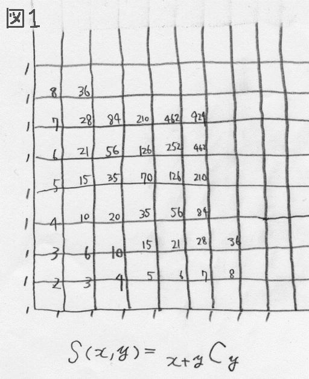
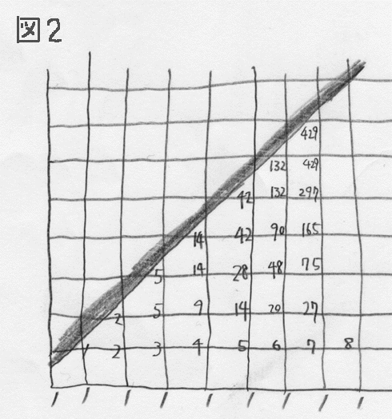
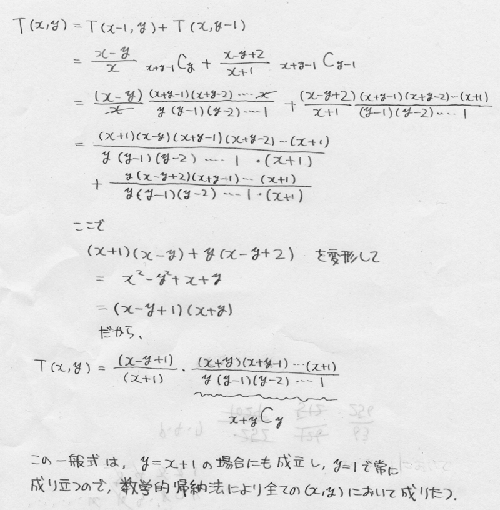
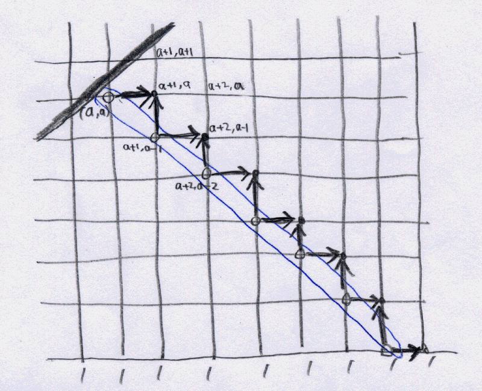
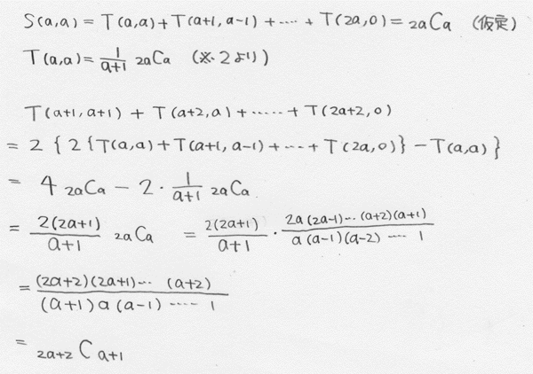
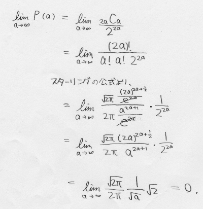

数学思考能力試験解答
２ （220点満点）
問１） （配点15点）（旧題の解答は63/128）
70/256＝35/128 （解説は問3であわせて行う。約分は必要ない）
問２） （配点5点）
可能。
問３） （配点200点）
（以下の各配点において、計算ミスのみのミスの場合は度合いに応じて半分ないしは1/3〜1/4程度の点を与える）
（また、ＴとＳの関係式で、解答とは本質的に無関係でも優れた発見があれば、その部分の配点の半分を限度として部分点を与える）
「0円から開始して、必ず1円になることができる」（※1）と仮定する。
その場合、このゲームを1円から開始して、同じ確率で、つまり「必ず」2円にすることができる。 （10点）
同様にして必ず3円、4円・・・とすることができるから、必ず+1000000円にすることもできる。
※1の命題が証明されれば、２）は証明されることになる。

図1を考える。
この図は、原点（0,0）を開始点とし、表が出ればY方向に+1、裏が出ればX方向に+1移動する状態を考えたものである。
ある点（x,y）において、資金はy-x円である。
各格子点に書かれた数字は、その場所にいくための場合の数である。 （図1と同義の記述10点）
図1における点（x,y）での場合の数を、Ｓ(x,y)と表す。
Ｓ（x,y）は、合計でx+y個ある｛→、↑｝のうちから↑をy本取り出す取り出し方の個数に等しいから、x+yＣyである。
なお、x+y回移動した時の全部の移動のしかたは 2^（x+y） である。

次に、図2を考える。
これは、y>xになるような移動のしかたをしない場合の、各々の場所への移動方法の場合の数を表す。
つまり、ここで描かれた数だけ、「資金が1円（以上）になることなく移動を続ける」場合の数がある。 （図2と同義の記述20点）
図2における点（x,y）での場合の数を、Ｔ(x,y)と表す。
まずはＴとＳとの関係式を導出する。
視察から、
Ｔ（x,y）＝（x-y+1）/（x+1） × x+yＣy （※2） （式30点、証明30点）
を得る。
T（x-1,y）とＴ（x,y-1）においてこの式が成立すると仮定すると、

上記より、
Ｔ（x,y）＝（x-y+1）/（x+1） × x+yＣy （※2）
は全ての整数（x,y）において成立する。
次に、図2においてちょうど2a回移動した時に、一度もy>xになっていないような組み合わせの数と、Ｓ（a,a）との関係を考える。
ちょうど2a回移動した時には、（a,a）（a+1,a-1）（a+2,n-2）・・・（2a,0）のどこかにいる。
したがってこの和が、一度もy>xにならないで2a回歩く歩き方の組み合わせの数である。
視察により、
Ｓ（a,a）＝Ｔ（a,a）＋T（a+1,a-1）＋T（a+2,a-2）＋・・・＋Ｔ（2a,0） （※3） （式30点、証明30点）
を得る。
※3を証明する。
S（a,a）＝Ｔ（a,a）＋T（a+1,a-1）＋T（a+2,a-2）＋・・・＋Ｔ（2a,0）
であると仮定する。

この図において明らかに、
Ｔ（a+1,a）＋T（a+2,a-1）＋T（a+3,a-2）＋・・・＋Ｔ（2a+1,0）＝２｛Ｔ（a,a）＋T（a+1,a-1）＋T（a+2,a-2）＋・・・＋Ｔ（2a,0）｝−Ｔ（a,a）
が成り立つ。
また、
Ｔ（a+1,a+1）＋T（a+2,a-2）＋T（a+3,a-3）＋・・・＋Ｔ（2a+2,0）＝２｛Ｔ（a+1,a）＋T（a+2,a-1）＋T（a+3,a-2）＋・・・＋Ｔ（2a+1,0）｝
である。
ゆえに
Ｔ（a+1,a+1）＋T（a+2,a）＋T（a+3,a-1）＋・・・＋Ｔ（2a+2,0）
＝２｛ ２｛Ｔ（a,a）＋T（a+1,a-1）＋T（a+2,a-2）＋・・・＋Ｔ（2a,0）｝−Ｔ（a,a） ｝
と書ける。
ここで、
Ｓ（a,a）＝Ｔ（a,a）＋T（a+1,a-1）＋T（a+2,a-2）＋・・・＋Ｔ（2a,0）
という仮定と、（※2）で示したＴの一般式を用いて、

上記のように、
Ｓ（a,a）＝Ｔ（a,a）＋T（a+1,a-1）＋T（a+2,a-2）＋・・・＋Ｔ（2a,0）
という仮定から、
Ｔ（a+1,a+1）＋T（a+2,a）＋・・・＋Ｔ（2a+2,0）
を表すと、Ｓ（a+1,a+1）の値と一致することが示された。
S（0,0）においてこの式は成立するので、全ての自然数に対して
Ｓ（a,a）＝Ｔ（a,a）＋T（a+1,a-1）＋T（a+2,a-2）＋・・・＋Ｔ（2a,0） （※3）
と言える。
以上から一般に、2a回コインを投げた後に、一度も資金が1円以上になっていない確率は、
Ｐ（2a）＝2aＣa ÷ 2^(2a) （20点）
と表せる。
（例えば2a=8のとき、Ｐ（8）＝70/256となり、問1の結果と一致する）
この確率の、a→∞での極限を考える。 （下の極限が正しく計算できていれば20点）

上記より、無限回の試行のうちに、一度も資金が1円を超えない確率は0である（※1の命題が示された）。
言い換えると、資金0円からスタートして無限回このゲームをするうちに、必ず資金が1円になる場合がある。
同様に、資金が1円になったときをスタートと考えると、資金は必ず2円になるし、同じく3円、4円・・・にも必ず到達する。
したがって、0円から開始して何度でもこのゲームを繰り返し行うことで、資金が1000000円に到達する瞬間が必ずある。